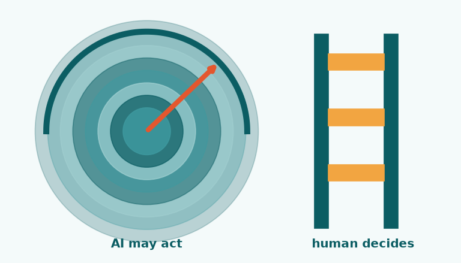

Writing · Essay
Faster cars need better brakes
Nobody buys a sports car for its brakes, yet the brakes are what let you drive it fast. I keep coming back to that picture whenever a new AI capability lands on my desk.

Each jump in model ability widens the set of things a system could do on its own: approve, reject, price, message, escalate. The tempting move is to let it. The disciplined move is to decide, before go-live, which of those actions the system may take by itself and which must stop and wait for a person.
In practice I draw that line with three questions. Is the action reversible? Who carries the cost if it is wrong? Could a reasonable customer or regulator ask us to explain it? Low-stakes, reversible, explainable actions can be automated aggressively. Anything that touches someone's money, access or dignity gets a human checkpoint, a log and an owner.
Governance often gets framed as the department of no.
Governance often gets framed as the department of no. I see it as the reason a business can say yes to more automation, more quickly, because everyone knows where the guardrails are. The more capable the engine, the more that design work matters, and the earlier it should start.
Next essay
Intelligence without a main character